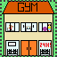
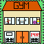

Activities
Hacktech
Pasadena, February 2016
 Hacktech is a 36 hour programming marathon at California
Institute of Technology.
Hacktech is a 36 hour programming marathon at California
Institute of Technology.  During Hacktech, I created a mobile app game called Youniversity with
a small team. It is based off many other traditional tycoon games where
you construct buildings on a scrollable 2D grid-like map. After
constructing buildings, students will come to your university and give
you money!

During Hacktech, I created a mobile app game called Youniversity with
a small team. It is based off many other traditional tycoon games where
you construct buildings on a scrollable 2D grid-like map. After
constructing buildings, students will come to your university and give
you money!

Github
National Society of Collegiate Scholars
September 2015 - Present

Video Game Programming Club
September 2014 - May 2015
Github